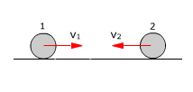
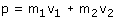
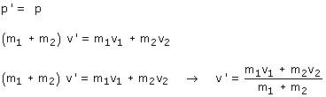
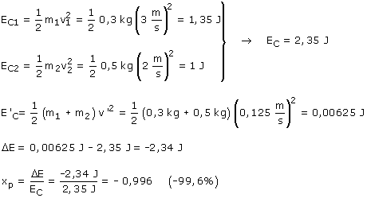

b)
Tras un choque totalmente inelástico los cuerpos quedan unidos
 |
 |
v1 = 3 m/s v2 = -2 m/s |
Conservación del momento lineal


Las bolas se mueven juntas a 0.125 m/s hacia la izquierda
Veamos la energía cinética perdida:

En el choque se pierde un 99.6% de energía cinética
¿Te percatas de que se pierde más energía cuando
las velocidades de los cuerpos que chocan tienen sentidos contrarios?